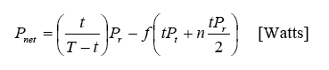
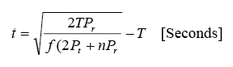

Power Saving Techniques
One of the most important goals for this project is minimising power consumption, in order to maximise battery life. A significant amount of power is wasted by idle nodes continuously listening for radio activiy. There are significant power savings to be made by placing nodes' radios in sleep mode to avoid unneccesary listening, especially in low traffic networks.
Scheduled Rendezvous
Many data collection applications require regular bulk data transfer from each sensor node back to the information sink; i.e. the traffic pattern is predetermined and periodic. A scheduled rendezvous protocol suits this application ver well, that is all nodes wake up simulateously, forming a short window for communications.(Figure 1). For the example of collecting data from Great Barrier Reef weather stations, the data would be collected every hour, so a possible schedule would be wake up for five minutes at the beginning of every hour.
|
| Figure 1: Nodes wake up for 5 minutes every hour |
However, there are a number of problems with this approach:
Some researchers have argued that scheduled rendezvous is not viable in ad hoc networks due to the difficulty of distributed clock synchronisation. Normally, the length of an active interval would be in the order of milliseconds. However, the active intervals considered for this project are in the order of minutes, hence the synchronisation has a much larger tolerance for error.
The second problem is gradual drifting of the sleep cycles in different nodes (Figure 2). This is easily countered using a technique called phase detection, which basically involves calculating the difference in phase between two nodes' schedules. The only information required is a counter indicating the phase of the source node, which allows receiving nodes to calculate their respective phase difference, and if neccesary make adjustments.
The third problem is significant: there is no connectivity between nodes during the sleep periods. Normally this is not a problem, as the sleep period is in the order of milliseconds. However, when the sleep period is in the order of hours, operations such as adding a new node to the network cannot occur until the next rendezvous occurs. Additionally, if two nodes are out of phase, they may never discover each other (Figure 2). The solution: preamble sampling.
Back To Top
Preamble Sampling
Preamble sampling allows the network to retain connectivity in power save mode. The cost is a higher energy cost to transmit, but idle modes are able to make drastic power savings.
Preamble sampling involves using long packet preambles as a mechanism to wake up other nodes. Idle nodes do not continously listen to the medium, instead they briefly check for activity at regular intervals. If any activity is detected, the node stays awake until it is satisfied the activity has ceased.
The key concept is that the preamble is the same length as one sampling cycle, so that every node will sample and be woken by the preamble, regardless of the phase of its schedule. Therefore, there is a tradeoff: With a slower sampling frequency (lower duty cycle), more power is saved by the receiver, but more energy is required to transmit the longer preamble. The approximate power savings are given by:

Where:
- Pnet is the total power saving (Watts)
- t is the length of the sleep interval (seconds)
- T is the length of the listen interval (seconds)
- Pt is the power consumed whilst transmitting (Watts)
- Pr is the power consumed whilst receiving (Watts)
- f is the average number of packets transmitted per second (Hz)
- n is the average number of nodes affected by each transmission (network density)
This expression was plotted in MATLAB with parameters based on the actual hardware being used for the project, and several traffic rates and node densities:
|
Figure 3: Power Saving vs Sampling Frequency
Low Traffic = 1/1800 Hz, Medium Traffic = 1/60 Hz, High Traffic = 1 Hz |
As can be seen in Figure 3, the best power savings occur with low traffic levels and low network density, thus this technique is well suited to the application. The maximum power savings are approximately 99%.
The optimum sleep interval is given by:

Note that the optimum sleep interval is dependent on the network density, and more importantly, the traffic rate.
Back To Top
Dynamic Optimisation
"Conversations" between two or more nodes may cause localised increased traffic levels. If these changes can be anticpated, the sampling frequency can be dynamically optimised to acheieve the best power savings. This has been implemented and verified in its simplest form:
- After a node transmits or receives a packet, it raises its sampling frequency for a predetermined timeout.
- After a node transmits a packet, it switches to using a shorter preamble.
If a node transmits a packet, it knows its neighbouring nodes will have raised their sampling frequency, so it can still talk to them with a shorter preamble. However, this approach lacks intelligence: A node will always raise its sampling frequency after transmitting or receiving, regardless of the probability of any further activity occurring. Future work may involve using network and application layer information to decide how to adjust the sampling frequency and preamble length, which would result in a very intelligent algorithm.
Back To Top